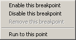
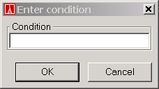

A condition breakpoint is a breakpoint in which debugger will stop if a certain condition is met. To set a conditional breakpoint use the breakpoint menu and choose `Set conditional breakpoint':

Once done a dialog pops up where you can enter a condition:

The condition is a Boolean expression that follows the same rule as the
expression you can enter in the
expression evaluation tool.
See Also
Breakpoint menu
Breakpoints commands
Breakpoint information command
Expression evaluation tool